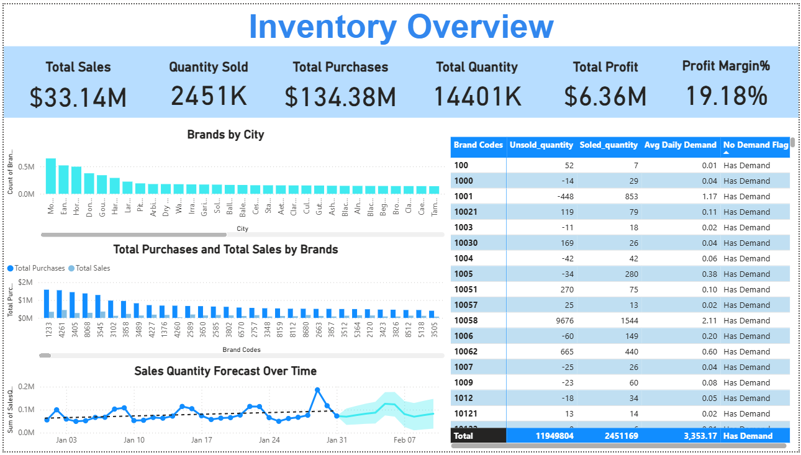
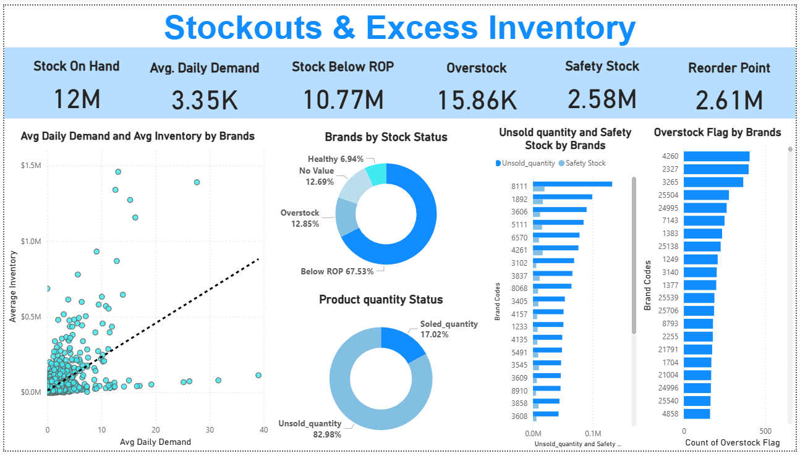
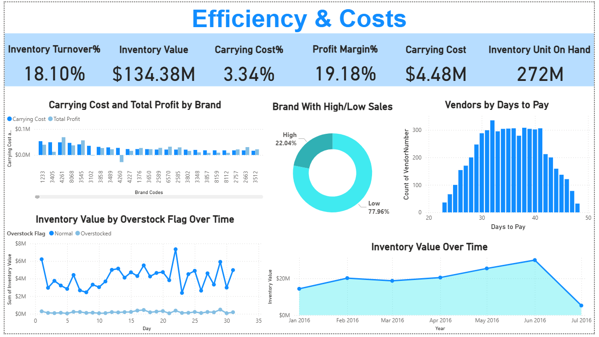

Inventory Analysis
Every day your shelves sit empty or overfull, you are losing money.
Most businesses do not realise it until it is too late. A customer lands on your store, finds the product out of stock, and goes straight to a competitor. Meanwhile, your warehouse is full of products nobody is buying quietly draining cash that could have been spent on growth. This project was built to find exactly where that is happening and put a real number on it.
See the analysis
This is Power BI dashboard built across three pages covering Inventory Overview, Stockouts and Excess Inventory, and Efficiency and Costs. See exactly where the money is sitting, where it is bleeding, and what to do about it.

Inventory Overview

Stockouts & Excess Inventory

Efficiency & Costs

Power BI Data Model - Star Schema
What problem does this solve?
Imagine you run a manufacturing business. You have purchased $134 million worth of inventory. But in the same period, you have only sold $33 million. Your warehouse is full. Your cash is tied up. And somewhere inside that gap between what you bought and what you sold your profit is slowly disappearing.
Now add to that: 67.53% of your total stock is sitting below its reorder point. That means the products customers actually want are running out. And 82.98% of your total product quantity went completely unsold.
This is not a storage problem. It is an intelligence problem. And data is the fix.
I analysed one year of purchase data and two months of sales data from a real manufacturing company dealing in electronic components, a fast-moving, high-stakes category where every wrong decision is expensive.
Here is my process
- Built the data model - Connected six tables using a Star Schema in Power BI: Sales, Purchases, Ending Inventory, Beginning Inventory, Purchase Prices, and Invoice Purchases
- Created calculated metrics - Built DAX measures for safety stock, reorder point, average daily demand, carrying cost percentage, inventory turnover, and profit margin
- Designed three dashboard pages - Inventory Overview, Stockouts and Excess Inventory, and Efficiency and Costs, each answering a specific business question
- Identified stockout risks - Found which brands and SKUs were most at risk of running out, and quantified the scale of the problem
- Quantified the cost of poor planning - Put a real dollar figure on carrying costs, overstocked SKUs, and unsold inventory
- Built a 4-step recovery plan - Turned every finding into a concrete action a supply chain or operations team can start today
What the data revealed
- $134M purchased. $33M sold. - Purchases are nearly 4 times the value of sales in this period. That gap is not just a number, it is where the cash flow problem lives, and it is fully visible in the data
- 67.53% of total stock is below reorder point - More than two thirds of all stock is in the danger zone. These are the products most likely to run out before the next order arrives, and the ones causing the most lost sales
- 82.98% of total product quantity went unsold - The warehouse is full, but not of what customers want. This is the definition of inventory inefficiency capital locked in the wrong products
- Only 6.94% of brands had truly healthy stock levels - Across all brands analysed, less than 7% were in a genuinely safe position. The rest were either overstocked or dangerously understocked
- $4.48M spent on carrying costs before selling a single unit - Every day inventory sits unsold, it costs money in storage, insurance, and depreciation. This analysis put an exact number on that hidden cost
- 77.96% of brands were classified as low sales - Nearly 4 in 5 brands were underperforming on sales. The business was spreading attention too wide and not concentrating on what was actually moving
Built with
- Power BI - Three-page interactive dashboard covering overview, stockouts, and cost efficiency
- Star Schema Data Modelling - Connected six relational tables into a unified, analysis-ready model
- DAX & Calculated Metrics - Built reorder points, safety stock, carrying cost %, inventory turnover, and demand forecasting measures
- Business Insight Reporting - Translated inventory data into a 4-step strategic recovery plan for operations and supply chain teams